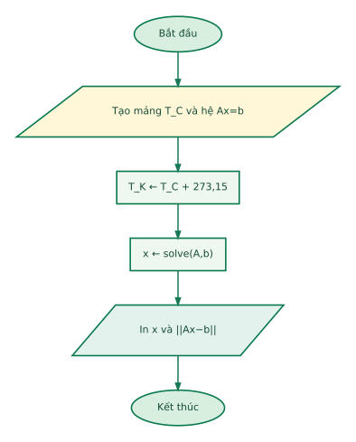

Khóa học / Mô-đun 3 / Bài 11
01 Mục tiêu và kiến thức tiên quyết
- Tạo ndarray, đọc shape/dtype và thực hiện phép tính vectơ hóa.
- Giải hệ tuyến tính bằng numpy.linalg.solve và kiểm tra phần dư.
- Phân biệt phép cộng phần tử với nhân ma trận, kiểm tra kích thước đầu vào.
Kiến thức tiên quyết: bài trước, kiến thức lập trình tương ứng.
02 Tình huống kỹ thuật
Một loạt nhiệt độ cần được chuyển đổi đồng thời từ °C sang K; đồng thời người học giải một hệ phương trình tuyến tính 2×2 để làm quen với phép toán ma trận.
T = [20, 25, 30] °C; A = [[2,1],[1,−1]], b=[5,1].
T_K = [293,15; 298,15; 303,15] K; nghiệm x=[2,1], phần dư gần 0.
03 Kiến thức và thuật ngữ cốt lõi
Mảng ndarray
NumPy cung cấp mảng nhiều chiều với dtype xác định. Phép toán trên mảng thường diễn ra theo từng phần tử; không cần vòng for Python cho thao tác cơ bản.
Vectơ hóa và broadcasting
Phép cộng 273.15 vào mảng nhiệt độ chuyển từng giá trị °C sang K. Quy tắc broadcasting phải được kiểm tra shape để tránh cộng nhầm chiều.
Giải hệ tuyến tính
numpy.linalg.solve(A,b) giải Ax=b khi A vuông và khả nghịch ở điều kiện số thích hợp. Cần đánh giá phần dư r=Ax−b thay vì chỉ tin nghiệm in ra.
Số học số thực
Kết quả ma trận dùng dấu phẩy động; điều kiện kém có thể làm nghiệm nhạy với sai số, nên phải nêu sai số kiểm chứng và đơn vị.
04 Xây dựng và kiểm tra thuật toán
Trước khi xem chương trình, hãy đọc dữ liệu đầu vào, chọn điều kiện rẽ nhánh hoặc lặp, rồi dự đoán kết quả. Mã giả mô tả ý nghĩa thuật toán; không phải cú pháp Python thực thi được.

Mã giả
Lần vết các bước phân tích
Đây là lần vết các dòng mã giả, không phải trình thông dịch Python. Tự kiểm tra nhánh điều kiện bằng bảng ca kiểm thử ở mục 07.
05 Chương trình Python đã kiểm tra
Đọc mã, dự đoán kết quả và chạy tệp bai_11.py trong thư mục code. Các mã bài 9 trở lên có thể cần dữ liệu đi kèm từ thư mục data.
import numpy as np
t_c = np.array([20.0, 25.0, 30.0])
t_k = t_c + 273.15
A = np.array([[2.0, 1.0], [1.0, -1.0]])
b = np.array([5.0, 1.0])
x = np.linalg.solve(A, b)
phan_du = np.linalg.norm(A @ x - b)
print("K:", np.round(t_k, 2).tolist())
print("x:", np.round(x, 3).tolist())
print(f"||Ax-b|| = {phan_du:.2e}")
06 Thử nghiệm tham số có hướng dẫn
Thay đổi đầu vào để kiểm tra trực giác và đối chiếu với kết quả dự đoán. Trình khám phá này được lập trình lại bằng JavaScript theo bài toán minh họa, không phải kết quả chạy mã Python.
07 Thực hành và kiểm thử
Thực hiện các nhiệm vụ theo thứ tự từ có hướng dẫn đến độc lập; ghi lại kết quả thực tế của chương trình và so sánh với kết quả kỳ vọng.
- Thêm 0 °C vào mảng và đối chiếu kết quả K.
- Giải hệ khác bằng tính tay và tính phần dư.
- Đặt một hệ có hai hàng trùng nhau, quan sát trường hợp không có nghiệm duy nhất.
Bảng kiểm thử bắt buộc
| Ca kiểm thử | Dữ liệu/điều kiện | Kết quả kỳ vọng |
|---|---|---|
| Đổi thang | 0 °C | 273,15 K |
| Mảng ba phần tử | 20,25,30 °C | 293,15;298,15;303,15 K |
| Hệ tuyến tính | A,b như đề | x=[2,1] |
| Hệ suy biến | det(A)=0 | Phải xử lý lỗi LinAlgError |
08 Vận dụng vào chuyên ngành
Thực hiện chuyển đổi loạt nhiệt độ từ cảm biến trong mô hình tính toán nhiệt.
Tổ chức các đại lượng đo cùng đơn vị thành mảng để phân tích đồng thời.
09 Trắc nghiệm và phản hồi
Mỗi câu có bốn phương án A/B/C/D. Chọn một phương án cho mỗi câu rồi nhấn Chấm và giải thích để xem vì sao từng phương án đúng hoặc chưa phù hợp.
Rubric tham khảo (100 điểm)
| Thành phần | Điểm |
|---|---|
| Đặc tả dữ liệu, đơn vị, giả thiết | 20 |
| Mã giả, trình tự thuật toán | 20 |
| Mã Python và tổ chức hàm/dữ liệu | 25 |
| Kiểm thử, đối chiếu, phân tích sai số | 25 |
| Giải thích và đề xuất cải tiến | 10 |
10 Nhật ký học tập và đánh dấu tiến độ
Tiến độ và ghi chép chỉ lưu trong trình duyệt hiện tại; không đồng bộ với hệ thống điểm của trường.
11 Tài liệu tham khảo và nguồn
| Nguồn | Vai trò và phạm vi sử dụng |
|---|---|
| Python for Science and Engineering.pdf | H.-P. Halvorsen — tính toán số, giải phương trình, đồ thị, mô phỏng và dữ liệu kỹ thuật. |
| NumPy Documentation | NumPy ndarray và các phép toán đại số tuyến tính. |
| Python 3 Documentation | Tài liệu chuẩn của ngôn ngữ Python 3. |
Học liệu mới được viết lại theo định hướng sư phạm. Không trích lại nguyên văn hoặc phân phối các slide/sách gốc trong gói website.